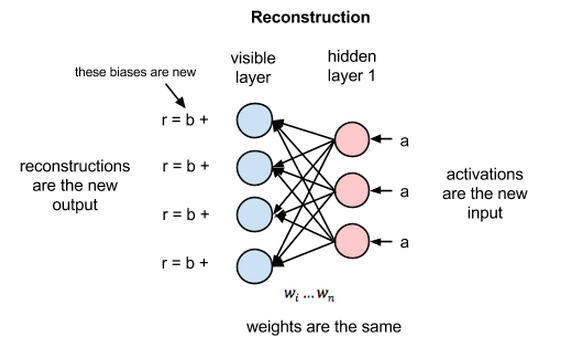
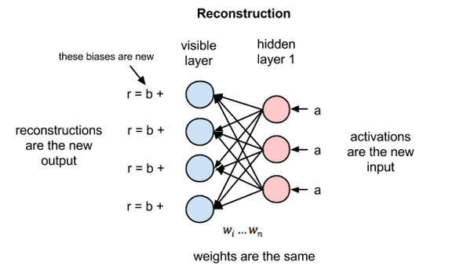

multiple cameras...
make motion detection rather straightforward
monocularity
makes things more difficult:
we require prior information
prior models
estimate plausible poses using probabilities
sufficiently general to admit all possible motions
<>
strong enough to resolve ambiguities
state of the art
activity specific models from motion capturing
Problem: Pose and motion data is extremely high dimensional, difficult to visualize and expensive to compute on.
Bayesian Filtering
approximate the posterior probability distribution over human poses
or motions given image observations
\(p(x_{1:t}|z_{1:t}) = p(z_{1:t}|x_{1:t})p(x_{1:t}) / p(z_{1:t})\)
states \(x_{1:t}\), observations \(z_{1:t}\), time \(t\)
high dimensionality
computing the posterior distribution is intractable
- assume state independence \(p(z_{1:t}|x_{1:t}) = \prod_{i=1:t}p(z_i|x_i)\)
- assume markov process \(p(x_t|x_{1:t-1}) = p(x_t|x_{t-1})\)
pose data
collected using off-line motion capturing
\(\mathbb{D} = \{y^{(i)}\}_{i=1,...,\mathcal{N}}\)
\(y^{(i)} \in \mathcal{R}^D\)
N poses y each consisting of D joint angles
a motion is a sequence of poses: \(m = (y_1,...,y_m)\)
pose space
activities exhibit strong regularities
\(\rightarrow\) data from a single activity is likely to be clustered in high dimension
\(\rightarrow\) eigen-poses can be constructed for complexity reduction
motion PCA
linear combination of mean motion and eigen-motions characterized by scalar coefficients
\[m \approx \mu + \Sigma_{j=1 \rightarrow B} x_j b_j\]
 4 subjects, varying speeds, ltr: walking, running, both
4 subjects, varying speeds, ltr: walking, running, both
Nonlinear Kinematic Models
motivation
periodic motions follow a cyclic trajectory in high dimensionality
linear models require many dimensions to appropriately span the data
nonlinear manifolds can model those structures better
gaussians
univariate \(\rightarrow\) multivariate \(\rightarrow\) processes
[drawings]
gaussian processes
\(f \sim GP(m, k)\)
function \(f\) is distributed as a GP with mean function \(m\) and covariance function \(k\)
this is a superset of a gaussian distribution
\(f \sim \mathcal{N}(\mu_{1:n}, \sigma_{1:n,1:n})\)
\(\mu_i = m(x_i)\quad\) \(\sigma_{ij} = k(x_i, x_j)\)
training gaussian processes
\(k(x,x') = \alpha exp\left(-\gamma/2 * ||x-x'||^2\right) + \beta \delta(x,x')\)
Hyperparameters \(\theta={\alpha, \gamma, \beta}\)
\(p(Y|\{x^{(i)}\}, \theta) = \prod_{d=1:D} (1/((2\pi)^N|K|)^{-1}) exp(-1/2 * y_d^T * K^{-1} y_d)\)
training tupels of vectors \({(x^{(i)}, y^{(i)})}_{i=1:N}\), \(y_d\) being a vector of every dth element
GP Latent Variable Model
utilizes gaussian processes to predict samples from latent variables
main feature: predictive distribution
unsupervised, we only know the observations and not latent space
optimization happens through evaluating for correct latent space \(\rightarrow\) pose space mapping
initialized with broad gaussians
GP Dynamical Model
GPLVM is sampled from independent training data -- ignores temporal relations
intuition for the latent space got lost because of missing spatial proximity
smooth pose trajectories \(\rightarrow\) smooth latent trajectories
required for accurate predictions and tracking
GPDM is initialized using GP prior over latent sequences
 GPDM, ltr: latent training poses, probability, sampling
GPDM, ltr: latent training poses, probability, sampling
GPDM tracking
 GPDM tracking with occlusion
GPDM tracking with occlusion
Extensions
a) Multi-Factor GPLVM
weighted sum over individual models with side information available
b) Hierarchical GPLVM

Hierarchical GPLVM Demo
Switching Linear Dynamical Systems
Restricted Boltzmann Machines
2 layers, neurons connected between the layers but not within
visible units represent the observation, hidden units the latent space
 

Conditional RBM
extension of RBMs to handle time-series data
added temporal input and autoregression: past n inputs influence current input and hidden layers
autoregressive weights model short-term temporal structure
hidden units model longer-term, higher level structure